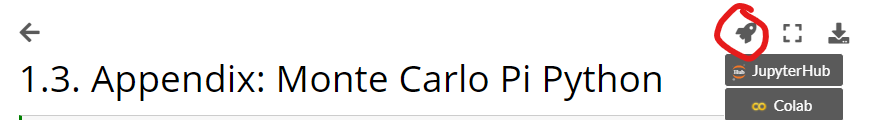

Molecular Dynamics and Monte Carlo#
In this course, we will treat computational methods that are able to describe the properties of thermodynamic ensembles of molecules. These properties are either determined via stochastic sampling methods (Monte Carlo Simulations) or by following the time evolution of a molecular system for a sufficient amount of time (Molecular Dynamics Simulations).
The prediction of molecular properties at finite temperature - no matter whether it be a chemical reaction in solution or in an enzyme - requires more than the tools treated in the course ‘Introduction to Electronic Structure Methods’. Finite temperature effects can give rise to substantial differences between an (idealised) isolated system at a hypothetical 0 K and the physical system at \(T > 0\) K. Molecules have kinetic energy, and the system’s behaviour is not governed by its potential energy alone, but by its free energy, with the effects of entropy taken into account. Consider the basic thermodynamical concept of the free energy of a reaction, \(\Delta G = \Delta H - T\Delta S\). Although a reaction may be predicted to be endothermic based on quantum chemical calculations at 0 K, the entropic term of the transformation may still favour the reaction to be exergonic. The reaction will thus be spontaneous at finite temperature (cf. the solvation of certain salts in water, where the solute cools down due to an positive reaction enthalpy, but the process is spontaneous due to a considerable rise in entropy).
Both Molecular Dynamics (MD) and Monte Carlo (MC) simulations are techniques that allow to obtain information about the statistical distribution of a system, and thus on its thermodynamic properties at finite temperature, entropic effects included. The link between the microscopic system and the macroscopic thermodynamic observables is established in a branch of physics known as statistical mechanics. During the following exercise sessions, you will apply the techniques that have been treated in the lecture to both theoretical and practical problems; ranging from simple coding over statistical mechanics to actually performing both MD and MC simulations. Although the scope of this course is too small to give you a complete overview of the field, you should be able to gain some insight into the basic methodology and concepts.
Theses exercises are based on various textbooks and the Molecular Simulations tutorial provided by the University of Amsterdam.
Practical information#
Time Table Spring Semester 2025#
The course will be Tue 11h15-13h00 (Lectures in BCH3118, exercises in BCH1113).
date |
type |
description |
|
|---|---|---|---|
18.2. Tue |
course |
Intro & Chapter 1 (From QM to MM) |
UR |
25.2. Tue |
exercise |
Ex 1 - Monte Carlo Estimation of Pi |
assistants |
04.3. Tue |
course |
Chapter 2 (Statistical Mechanics) |
UR |
11.3. Tue |
exercise |
Ex 2 - Harmonic Oscillator |
assistants |
18.3. Tue |
course |
Chapter 3 (Monte Carlo Simulations) |
UR |
25.3. Tue |
exercise |
Ex 3 - LJ gas Monte Carlo |
assistants |
01.4. Tue |
course |
Chapter 4 (MD Simulations 1) |
UR |
08.4. Tue |
exercise |
Ex 4 - Molecular Dynamics |
assistants |
15.4. Tue |
course |
Chapter 5 (MD Simulations 2) |
UR |
22.4. Tue |
Easter Break |
||
29.4. Tue |
exercise |
Ex 5 - Molecular Dynamics |
assistants |
06.5. Tue |
course |
Chapter 6 (MD Simulations 3) |
UR |
13.5. Tue |
exercise |
Ex 6 - Protein folding |
assistants |
20.5. Tue |
course |
Q&A Session |
assistants |
27.5. Tue |
exam |
Written Exam |
Grading and attendance#
Please note that your attendance to the exercises is mandatory, during your 1:1 interview (see below) and strongly encouraged otherwise. All the exercises can be finished within these 2 hours, and the assistants will be with you to answer any questions that you may have. Every set of exercises will be accompanied by a written report.
During all except the first exercise session, each person will spend 5-10 minutes with an assistant where they will be asked questions about the past week’s exercises and the respective report, which must have been handed in as an electronic copy at the beginning of the session (as a pdf). The answers to these questions will be graded and, together with the written report, contribute 1/2 to your overall grade. Please note that the last session will be an exception, as the grading will be based on the written report only. All reports need to be handed in two weeks after the respective session except for the last record which is as noted on moodle.
All reports are handed in via moodle.epfl.ch.
Since the scope of this course is limited, each exercise session is accompanied by one or several more involved bonus questions treating theoretical problems of relevance. Solving these bonus questions will give you additional points at every exercise session and can thus substantially improve your final grade of the course.
Although the exercises include some coding, you will not be tested on your
knowledge of Python, but on the understanding of the general concepts
instead.
Your final grade will be based on 5 out of a total of 6 grades.
Contents#
This list gives an overview of the topics that will be covered during the next weeks.
Statistics: Numerical estimation of \(\pi\) using Monte Carlo methods
Statistics: Statistical Mechanics and the Boltzmann Distribution
Monte Carlo: Detailed Balance in Monte Carlo
Molecular Dynamics: Implementing integrator
Molecular Dynamics: Solvent models and initialization
Molecular Dynamics: MD simulation of a biological system
Computer environment#
You can use a virtual environment in this course that you can directly launch from the exercise website.
Simply click the rocket button on the top right of the code files and choose either JupyterHub to launch noto.epfl.ch or Colab if you want to launch Google Colab.

On noto.epfl.ch your work will be saved on your EPFL storage.
To submit your code download the .ipynb file from noto or Colab.
On noto you right click on the file to download.
Ask the assisstant if you have questions/problems about setting up the virtual environment.
Questions#
We are here to help - please do not hesitate to contact us outside the scheduled hours. You may contact us by mail, ask a question on moodle (preferred) or schedule an appointment to discuss with us in person.
If you notice any typos or mistakes in the exercise script, please notify the assistants.
References#
Background information about the concepts of the exercise can be found in [TA87] and [SF96].
Carlos Simmerling, Bentley Strockbine, and Adrian E. Roitberg. All-atom structure prediction and folding simulations of a stable protein. Journal of the American Chemical Society, 124(38):11258–11259, 2002. doi:10.1021/ja0273851.
Berend Smit and Daan Frenkel. Understanding Molecular Simulation: From Algorithms to Applications. Elsevier, 1996.
D.K. Tildesly and M.P Allen. Computer Simulation of Liquids. Oxford Science Publications, 1987.
License#
In case you want to reuse this material.
 for Text and Images
for Text and Images
 or
or  for Code
for Code